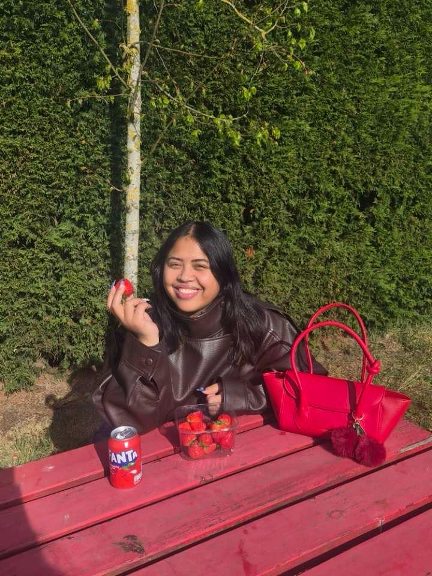

Over mij
Wie ben ik?
Hoi! Ik ben Abigail Toekimin, een CMGT-student aan Hogeschool Rotterdam. Mijn portfolio staat in het teken van Bloei, een thema dat voor mij symbool staat voor groei, ontwikkeling en het blijven ontdekken van nieuwe mogelijkheden.
Ik ben iemand die graag creativiteit en technologie samenbrengt. Of ik nu bezig ben met design, development of een nieuw concept, ik vind het leuk om ideeën uit te werken en stap voor stap tot een eindresultaat te brengen. Daarbij blijf ik mezelf uitdagen om nieuwe dingen te leren en mijn vaardigheden verder te ontwikkelen.
In mijn vrije tijd houd ik van zingen en ben ik graag creatief bezig. Die creativiteit neem ik ook mee in mijn werk, waar ik graag experimenteer, nieuwe oplossingen bedenk en blijf groeien als maker. Via dit portfolio laat ik zien wie ik ben, wat ik maak en hoe ik mezelf blijf ontwikkelen.

Abigail Toekimin
CMGT · Hogeschool Rotterdam
Mijn groeiverhaal
2023
Start van mijn opleiding Creative Media & Game Technologies
2024
Ontwikkeling van mijn eerste grotere design en development projecten tijdens CLE
2026
Op zoek naar een stage om verder te groeien als designer en developer